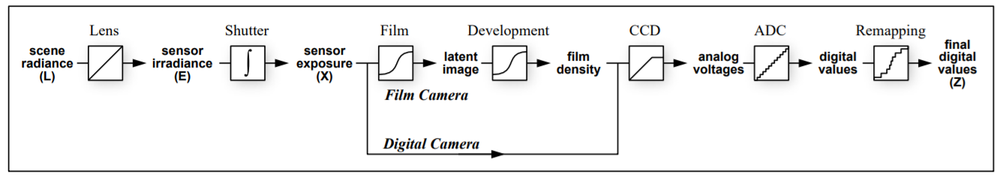
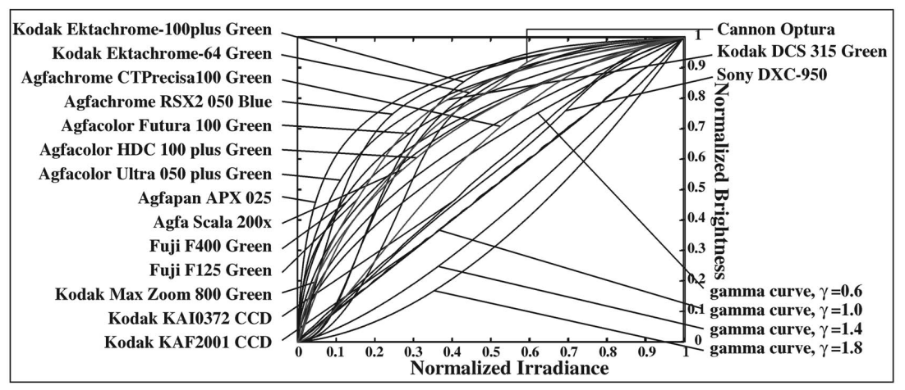
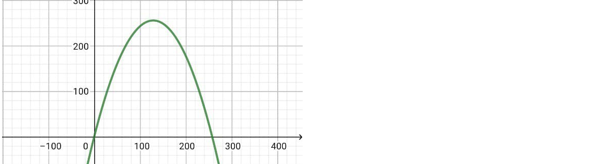

ImageProcessing HDR
實作項目
- HDR
- Tone Mapping
- Global Tone Mapping
- ACES
- Reinhard
- CE
- Uncharted2
- Local Tone Mapping
- Photographic
- Global Tone Mapping
輸入圖片
| 快門 | 16 | 8 | 4 | 2 |
|---|---|---|---|---|
| 照片 | ||||
| 快門 | 1 | 1/2 | 1/4 | 1/8 |
| 照片 | ||||
| 快門 | 1/16 | 1/32 | 1/64 | |
| 照片 |  |
成果展示
 |
 |
 |
|---|---|---|
| 我們的 HDR 與使用 Photoshop 轉成 JPG | Local ACES | Local Reinhard Enhance |
HDR
概念
- 此為相機獲得 的流程

而我們的目標就是從 還原到 ，再將多張不同曝光時間的圖結合，獲得 HDR 的圖片 - 每一家相機所使用的 Response Function 都不一樣，而我們的目標就是要還原這個 Response Function 的反函數，即可將 還原到

HDR 演算法設計
- 首先先定義 Response Function 為
- 其中
- 經過 後，轉換為 ~
- 我們的目標就是求出：，其中
- 定義
- 設定 constraint 避免無限多組解
-
- 其中 表示像素數， 代表圖片數
- 加入後項希望讓結果平滑， 為可設的參數
- 只會有 個輸入、 有 個，所以可以直接用對照表儲存
- 目標：求得
- 加入 Weighting Funciton，加強中間的值
- 
- 將 拆解成 的形式
- 並使用 求出
-
- 大小的矩陣
- 描述 Row 所代表的 值對應的
-
- 大小的矩陣
- Row 代表某一張圖片的某一個像素
- 在每一個 Row 的對應的 值所對應的 Column 填上 ，其餘為
-
- 大小的矩陣
- Row 代表某一張圖片的某一個像素
- 在每一個 Row 的對應的第 個 Column 填上 ，其餘為
-
- 大小的矩陣
- 描述
-
- 為 大小的矩陣
- 描述
- 取樣點
- 需要取 ，而我們預設取 個點
- 均勻的分布點，讓圖片不同亮度都可以被取樣到
- 求出每一張圖的每一個像素的 值後，將多張圖合併到一張
- 使用權重以保留品質較高的顏色
- 以上為 R, G, B channel 分開操作
Tone Mapping
Global Tone Mapping
- 計算照片的平均亮度
- 將所有的像素的 值加總並平均，以下稱作
- 使用多種方式來將 mapping 至 ~ 之間
- ACES(default)
- 將 乘上 後，作為
- 其中參數設為
- Reinhard
- 自定義灰值 ，我們將它設為
- 將 乘上 並除上 後，作為
- CE
- Uncharted2
- 自定義白值 ，我們將它設為
- 定義一個 function 為
- ACES(default)
Local Tone Mapping
- 實作 Photographic Tone Reproduction for Digital Images
- 計算出 為
- 可以由使用者自訂，代表 LDR 的亮度
- 計算出分別計算出 為 ~ 跟 ~ 的 Gaussian Filter Kernel，分別稱
- 跟 可以由使用者自訂，分別代表 Gaussian Filter 的初始值與 間的比例
- 將 , 對 做捲積，獲得 ,
- 計算 為
- 為 ，避免分母接近
- 可以由使用者自訂，代表圖片的銳利度
- 尋找每個像素的 符合 作為
- 可以由使用者自訂，代表 gradient 間的最大差距
- 值，作為他的 Local 亮度
- 值，作為他的 Local 平均亮度
- 後續與 Global 相同，使用 ACES、Reinhard、CE、Uncharted2，將值 mapping 回 ~